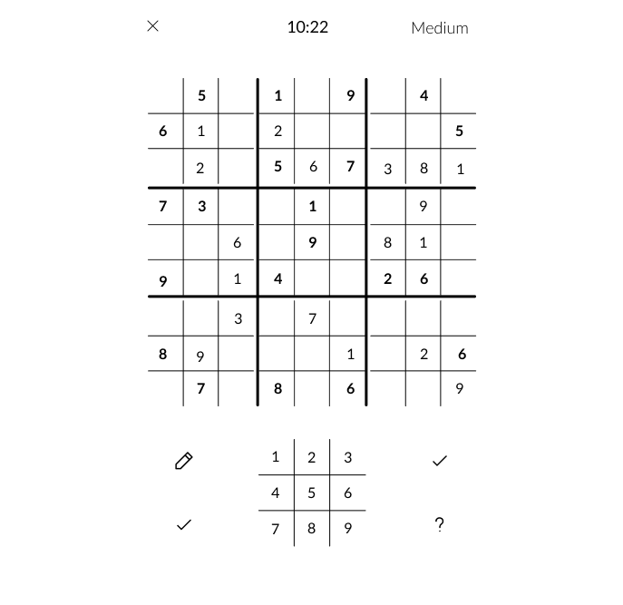

Sudoku
Sudokus are holiday homework for adults. Now with dark mode.
I'm Daniele, a Physics Engineering graduate from Italy.
I fell in love with Software design and engineering as soon as I wrote my first “hello world!”.
This is just a place to mess around with some ideas.
Sudokus are holiday homework for adults. Now with dark mode.

Top-level gamers require top-level reflexes. Try to measure them, and see if you can improve.
Ever felt annoyed that, while iOS has a beautiful clock app, MacOS doesn’t?
I have, so I made one.
I also wanted to create a relaxing view: you’ll find quotes and changing backgrounds from Unsplash.
This site is hosted on Github pages.
Take a look at the source.